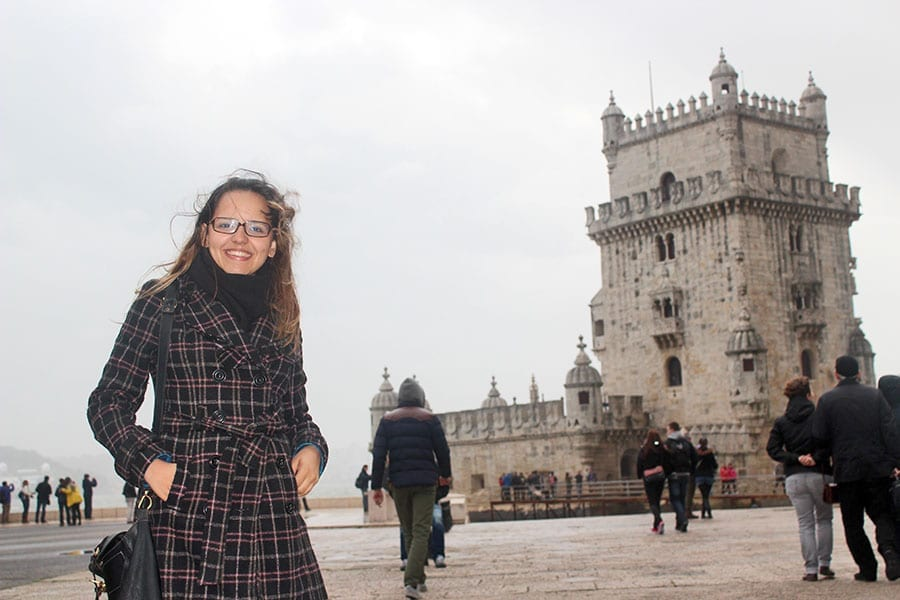

4 PRINCIPAIS PONTOS TURÍSTICOS DA EUROPA
Sem dúvidas, a Europa possui muitos países com pontos turísticos incríveis. Itália, França, Espanha, Holanda, Alemanha, Inglaterra e Portugal (onde eu morei por 1 ano) estão entre os mais procurados pelos brasileiros e para ajudar você a conhecer um pouquinho de cada lugar, eu listei os 7 pontos turísticos da Europa que são parada obrigatória para qualquer turista que está planejando passar por lá. Ficou curioso? Confira abaixo a lista com os
Itália: Coliseu de Roma
O principal ponto turístico da Itália é sem dúvida o Coliseu de
Roma. É um dos monumentos mais famosos do mundo e atrai nada menos
do que 4 milhões de turistas todos os anos. Sua construção se
iniciou no ano de 72 d.C. e durante décadas, serviu de palco para
gladiadores que lutavam entre si ou com animais para um público de
mais de 70 mil romanos.
A visita às ruínas do Coliseu é um passeio obrigatório a todos os
turistas que visitam Roma e a Itália, não somente por sua grandeza,
mas por sua história. Como a maioria dos brasileiros que viajam para
a Itália, passam por Roma, acabam conhecendo o grande Coliseu.

França: Torre Eiffel em Paris
É claro que a Torre Eiffel de Paris não poderia estar fora dessa lista. Construída em 1889, ela conta com 325 metros de altura e 1.665 degraus, e você não pode deixar de visitá-la quando estiver em Paris. Vista de diversas partes da capital francesa, a Torre Eiffel é um marco de como um monumento pode tornar-se um símbolo de uma nação. Contrate agora o seu ingresso para Torre Eiffel e não enfrente filas

Espanha: Sagrada Família em Barcelona
Os principais pontos turísticos de Barcelona e da Espanha foram construídos pelo famoso arquiteto Antoni Gaudì. A principal obra e o ponto turístico mais famoso que ele construiu é a Sagrada Família de Barcelona, uma igreja com uma grandeza incomparável e que ainda não está acabada, pela enorme quantidade de detalhes e pelo tamanho que foi projetada.

Inglaterra: Torre Big Ben de Londres
O bacana é que é possível fazer uma visita às seções do Parlamento gratuitamente, mas você tem de ir diretamente ao Big Ben e ver se haverá plenária no dia. Se quiser e estiver em Londres no verão, a dica é fazer um passeio guiado pelo interior do Big Ben para conhecer sua história e a importância dele para a Inglaterra. É considerado o principal ponto turístico de Londres.

Portugal: Torre de Belém em Lisboa
A Torre de Belém fica em Lisboa e é considerada o principal ponto turístico de Portugal e um dos mais visitados da Europa. A Torre de Belém em Lisboa foi construída na era de ouro de Portugal, época das navegações, com o objetivo de proteger a cidade de invasores.
